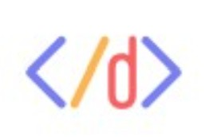

Product Development Engineering Intern, Bambai Security
Barcelona, Spain | June 2026 – August 2026
- Deployed 2 machine learning models to an ESP32 microcontroller using Microsoft Edge Impulse to inference intrusion detection from high frequency accelerometer data and decibel readings.
- Integrated four sensors used to detect noise, motion, vibration, and temperature into a state machine in order to increase the accuracy at which a security alarm system can predict a true alert.
- Collaborated with the hardware team to push code from the Arduino IDE onto a breadboard housing the four sensor components.
Summer Coding Camp Instructor, DOit Coding
Austin, Texas | June 2024 – August 2024

- Guided students ages 7-11 through a Python and Scratch MIT coding language curriculum.
- Cultivated a 3-hour engaging learning environment that was both enjoyable and productive 5 days a week.
- Led students to create their own coding games and projects such as Wordle, tic-tac-toe, and rock-paper-scissors in one-week camp sessions with 100% completion.
Electrical Engineering Intern, Dell Technologies
Austin, Texas | February 2024 – April 2024
- Innovated a robot-dog assistant geared towards helping individuals with mobility impairments alongside six other team members.
- Implemented Python code for motor movement within the electrical engineering team and senior Dell employee mentors.
- Designed block diagrams to clearly communicate interconnecting elements of the product.
- Completed voltage calculations to power the robot with lithium-ion batteries for a 4-hour runtime.